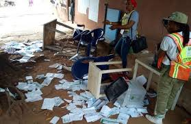
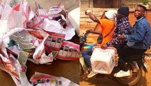
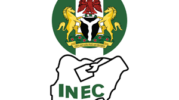

Election is the avenue through which leaders are being selected in a democratic state.
Credible election is fast becoming a global democratic process because free and fair elections brings about legitimate government.
In modern democracy, election has taken place in Nigeria in the following progressive years: 1999, 2003, 2007, 2011, 2015, 2019 and 2023 respectively.
However, misconduct in Nigeria's electoral process negates the requirements and opportunity for citizen to use their ballots elect their acceptability of official declaration of a winner and sometimes elicit violent protest.
There are many factors that contribute to the misconduct of elections in Nigeria of which are governmental and citizenry.
The following are pictorial evidences of election misconduct in Nigeria
 This is an expression of man's innate evil to sabotage fellow men.
It is the deceit of the political class to sudue the ruled and make them permanently manipulated to enable the powerful deny them of their rights.
This is now widely spread among every citizens in Nigeria to use whatever power/position had for manipulation of the powerless.
To worsen the case of electoral misconduct in Nigeria, the electoral commission (INEC) became the seat of manipulation over the years where the political officers buys the electoral officers thereby monitizing the rights and destiny of the people.
This corruption is demonstrated by:
Ignorance is a virus that makes man act like a child.
Ignorance is the condition of being uninformed, it can also be seen as lack of knowledge.
Most Nigerians are ignorant of their rights and thereby fall prey of the politician's tricks.
Ignorance has really contributed to the failure of credible elections in Nigeria.
Ignorance has made many electorates gullible and pawn in the game of politics.
Poverty is a disease that has eaten up into the head of the Nigerians
It is the inability to make ends meet, incapacitation of a man to meet his needs
Poverty is the major sickness in Nigeria, and it can be very frustrating.
Poverty made many electorates sell their vote for a morsel of food to survive. Good governance is sold for as small as Two Thousand Naira.
This has set Nigeria on a backward journey because free and credible election has become negotiable. The highest bidder gets the throne.
Hooliganism and thugery has become a very lucrative business in Nigeria with the aid of politicians equipping the thugs for election manipulation.
It got so worse that majority of our politicians running for offices are polished/corporate hooligans. This made violence more popular during Nigeria elections.
Hooliganism has become the tool politicians use to maximise their misconduct during and after electoral process by terrorising the electorates and even some opponents.
The effect of this goes beyond electoral misconduct but reduces the national values of the nation because the hooligans now have more sense of relevance than other citizens.
Therefore, Nigerian youth now have more drive to become hooligans than becoming a sensible citizen.
Greed is the selfish ambition of a man to take possession of things belonging to others.
this has become a syndrome that flows in every Nigerians, to show power over others. this makes politicians turn elections into do or die affair.
Greed is now the blood that flows in everyone and this transcend beyond elections into governmental activities.
| S/N | Item | Agree | Disagree |
| 1 | Election is better manipulated for proper governance | ||
| 2 | Misconduct only makes election process better | ||
| 3 | it is better to sell ones vote than to vote one's conscience | ||
| 4 | Election in Nigeria is a mere scam | ||
| 5 | Election misconduct has made Nigeria better | ||
| 6 | Politicians are the brain behind every electoral misconduct | ||
| 7 | Electoral misconduct has brought about improvement in the youth's morality | ||
| 8 | Hooliganism has reduced to the bearest minimum during Nigeria's election | ||
| 9 | All elections in Nigeria had been free and fair | ||
| 10 | Electoral misconduct in Nigeria has reduced turned Nigeria into the pit of corruption |